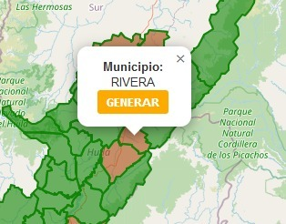
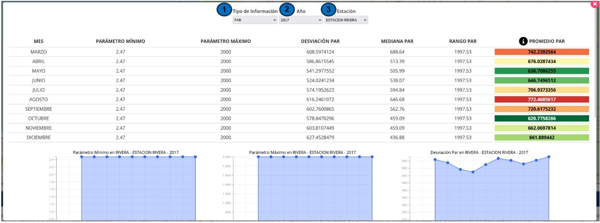
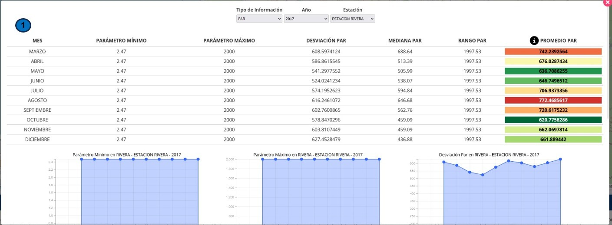
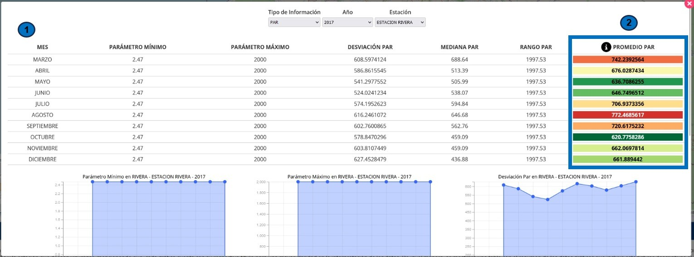
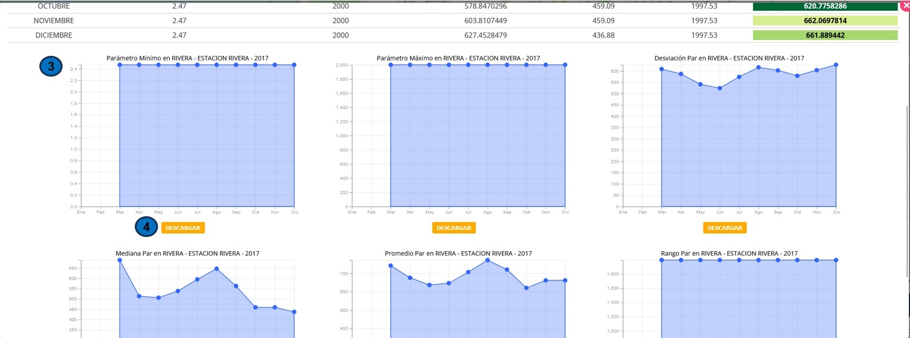

Cuando la aplicación web de SolarVisor se inicia, se encuentra un (1)
mapa interactivo que permite seleccionar una región específica para
generar un diagrama climático. Para facilitar la navegación y el
análisis, la plataforma ofrece herramientas comunes que se pueden
utilizar:
También está la opción de usar los botones de "+" y "-" que se
encuentran en la interfaz para acercar o alejar el mapa. Esta función
es especialmente útil para ajustar el nivel de zoom de manera más
precisa.
Rueda de desplazamiento: Se puede utilizar la rueda de desplazamiento
del mouse para acercar o alejar la vista del mapa. Esto permite
explorar diferentes áreas con mayor detalle o tener una visión más
amplia de la región del departamento del Huila.
La plataforma ofrece la posibilidad de elegir los municipios del
departamento del Huila que contienen información sobre Radiación Solar
y Radiación PAR ya sea dando clic o simplemente pasando el puntero en
una posición concreta del mapa, se podrá acceder a los datos de
Radiación Solar y/o Radiación PAR para ese municipio en particular. La
plataforma facilita esta interacción de manera intuitiva y sencilla,
permitiendo explorar la información climática de los diferentes
municipios de forma rápida.
Después de seleccionar una ubicación en el mapa, se activará un
pequeño cuadro de diálogo o "tooltip" que mostrará el nombre del
municipio relacionado, junto con un botón etiquetado como "Generar".
Para obtener las gráficas correspondientes, los usuarios simplemente
deben hacer clic en este botón.

Una vez presionado el botón "Generar", se desplegará una ventana de
diálogo que contendrá toda la información disponible para ese
municipio, incluyendo las variables, años y las gráficas
correspondientes.
En la parte superior de esta ventana, encontrará la opción (1) "Tipo
de Información", que le permite filtrar entre Radiación PAR o
Radiación Solar según su preferencia.
Justo al lado derecho, verá la opción (2) "Año", donde podrá
seleccionar el año específico que desea graficar. Por último, en la
sección (3) "Estación", también podrá elegir la estación climática de
ese municipio que desea incluir en la gráfica.

Después de seleccionar las opciones deseadas, se presentará la
siguiente vista:
En primer lugar, encontrará (1) una tabla que contiene los datos
relativos a la variable de Radiación Solar o Radiación PAR,
acompañados de estadísticas descriptivas que incluyen los valores
mínimo y máximo, la desviación estándar, la mediana, el rango y el
promedio.

En la columna del promedio (2), observará que los valores se
representan mediante una paleta de colores distintivos. Esto se hace
con el propósito de facilitar la identificación del mes con la
radiación más alta y el mes con la radiación más baja. La coloración
se basa en una escala, donde el rojo más oscuro indica la radiación
más alta, mientras que el verde más oscuro representa la radiación más
baja. También se utilizan colores intermedios como el naranja y el
amarillo para representar niveles intermedios de radiación.

En la parte inferior de la ventana, encontrarás una serie de gráficos
(3) que representan visualmente las estadísticas mencionadas
anteriormente. Es relevante destacar que los gráficos generados pueden
ser exportados como imágenes en formato PNG simplemente haciendo clic
en el botón (4) de descarga correspondiente.
